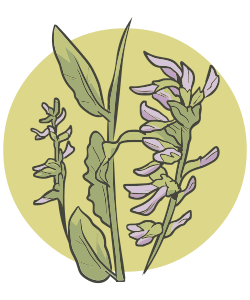

O cultivo da espécie foi uma das soluções propostas, mas estudos apontam que o perfil fitoquímico da planta é alterado, tendo menor concentração de ativos do que as que são coletadas em seu ambiente natural. Para atender aos requisitos de qualidade, a China passou de exportador a importador dessa planta, o que também pressiona a sustentabilidade das populações selvagens dessa espécie vegetal em zonas áridas de outros países que agora abastecem a China (por exemplo, Uzbequistão, Cazaquistão, Paquistão, Afeganistão) (Applequist et al., 2020).
